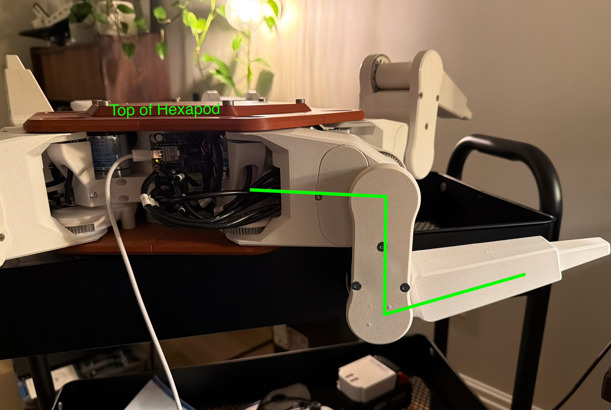

Real-Time Firmware (Xiao RP2350)
Each of Hex3's six legs carries its own Seeed Xiao RP2350, running the firmware in real_time/xiao_code. It drives that leg's three axis motors and encoders, reads the toe (foot contact) sensor, and talks to the Raspberry Pi over CAN.
This page covers building, flashing, and calibrating that firmware. For wiring, see Electronics Setup.
Requirements
- VS Code with the PlatformIO IDE extension (this is the recommended extension listed in the project's
.vscode/extensions.json) - A Seeed Xiao RP2350, connected via USB
Library dependencies (RP2040_PWM, PID, RP2040PIO_CAN, and the Adafruit VL6180X toe-sensor driver) are declared in platformio.ini and installed automatically by PlatformIO.
1. Open the Project
- Open VS Code and install the PlatformIO IDE extension if you haven't already.
- Use Open Folder and select
real_time/xiao_code. PlatformIO will pick upplatformio.ini, which targets theseeed_xiao_rp2350environment.
2. Create Your user_config.hpp
user_config.hpp is intentionally left out of git, since it holds per-board settings, so you need to create your own copy before the firmware will build.
- Copy
lib/HexapodController/TEMPLATE_user_config.hpptolib/HexapodController/src/user_config.hpp. - Set
LEG_NUMBERto the leg (0-5) this board is mounted on. This must be unique per leg — it also determines the board's CAN node ID (0x100 + LEG_NUMBERfor commands from the Pi,0x180 + LEG_NUMBERfor replies), which is how the Pi'scanROS2 node addresses each leg individually. - Set
LOG_LEVELandTELEMETRY_LOGGING_SPACEfor how much serial telemetry you want while debugging. - Add or select a
#ifdef <YOUR_NAME> ... #endifcalibration block for this leg inlib/HexapodController/src/config.hpp, following the Leg Calibration steps to generate theZERO_POINTSvalues.
3. Build & Upload
With the seeed_xiao_rp2350 environment selected in PlatformIO:
- Build to compile the firmware.
- Upload while the Xiao is connected over USB.
- Open the PlatformIO Serial Monitor at 115200 baud to confirm the board boots and prints its CAN tx/rx node IDs, along with joint position/velocity/acceleration telemetry.
4. Leg Calibration
-
Create a user profile in the
config.hppfile. It should look something like:#ifdef USER #define STEP_THRESHOLD 40 #define FIFO_IDLE_THRESHOLD 100 #define ZERO_POINTS { \ {0.547631 + CALIBRATION_OFFSET_A0, \ -0.836020 + CALIBRATION_OFFSET_A1, \ 2.787243 + CALIBRATION_OFFSET_A2}, \ {0.0 + CALIBRATION_OFFSET_A0, \ 0.0 + CALIBRATION_OFFSET_A1, \ 0.0 + CALIBRATION_OFFSET_A2}, \ {0.0 + CALIBRATION_OFFSET_A0, \ 0.0 + CALIBRATION_OFFSET_A1, \ 0.0 + CALIBRATION_OFFSET_A2}, \ {0.0 + CALIBRATION_OFFSET_A0, \ 0.0 + CALIBRATION_OFFSET_A1, \ 0.0 + CALIBRATION_OFFSET_A2}, \ {0.0 + CALIBRATION_OFFSET_A0, \ 0.0 + CALIBRATION_OFFSET_A1, \ 0.0 + CALIBRATION_OFFSET_A2}, \ {0.0 + CALIBRATION_OFFSET_A0, \ 0.0 + CALIBRATION_OFFSET_A1, \ 0.0 + CALIBRATION_OFFSET_A2}, \ } ... #endif -
To calibrate your legs, set both the config values and calibration offsets to 0.0:
#define ZERO_POINTS { \ {0.0 + 0.0, \ 0.0 + 0.0, \ 0.0 + 0.0}, \ {0.0 + 0.0, \ 0.0 + 0.0, \ 0.0 + 0.0}, \ {0.0 + 0.0, \ 0.0 + 0.0, \ 0.0 + 0.0}, \ {0.0 + 0.0, \ 0.0 + 0.0, \ 0.0 + 0.0}, \ {0.0 + 0.0, \ 0.0 + 0.0, \ 0.0 + 0.0}, \ {0.0 + 0.0, \ 0.0 + 0.0, \ 0.0 + 0.0}, \ } -
Turn off the hexapod and move the leg to the calibration position and plug in the Xiao RP2350 on the mainboard.

- S1 should be parallel with the side panel of the hexapod.
- S2 should be as far down as it can go. The 3 wires going into S1 must be laid out flush (the distance between S1 and S2 is exactly 1 wire diameter).
- S3 should be as far up as it can go (the distance between S2 and S3 is exactly 1 wire diameter).
-
Upload main.cpp and turn on the serial monitor. You should see a value like this:
{"Joint": {"pos": [0.547631, -0.836020, 2.787243], "vel": [0.000049, 0.006216, 0.000052], "acc": [-0.001082, 4.619407, -0.000955], "duty": [80.000000, -80.000000, -80.000000]}, "voltage": 0.730000, "toe": 0.000000} -
Add the code to the leg you are calibrating. For example, if we were calibrating Leg0:
#define ZERO_POINTS { \ {0.547631 + CALIBRATION_OFFSET_A0, \ -0.836020 + CALIBRATION_OFFSET_A1, \ 2.787243 + CALIBRATION_OFFSET_A2}, \ {0.0 + 0.0, \ 0.0 + 0.0, \ 0.0 + 0.0}, \ {0.0 + 0.0, \ 0.0 + 0.0, \ 0.0 + 0.0}, \ {0.0 + 0.0, \ 0.0 + 0.0, \ 0.0 + 0.0}, \ {0.0 + 0.0, \ 0.0 + 0.0, \ 0.0 + 0.0}, \ {0.0 + 0.0, \ 0.0 + 0.0, \ 0.0 + 0.0}, \ } -
Upload the code to the leg and make sure it is in a standing position. (Confirm in
user_config.hppthat you set the correctLEG_NUMBER). -
Repeat for all 6 legs.
Ad-Hoc Hardware Tests
test/axis_test.cpp and test/can_test.cpp are standalone bring-up sketches (not PlatformIO unit tests) for exercising a single axis or the CAN transceiver in isolation, independent of the full leg controller — useful when debugging one subsystem at a time.